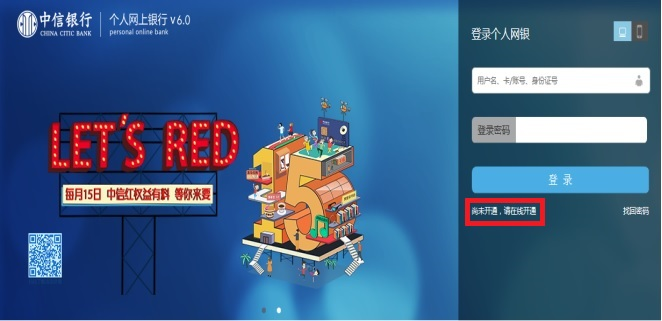
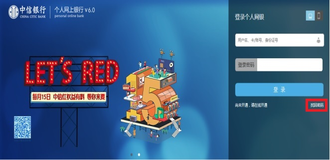

一、网银导入只支持网上银行的账号登录
本平台的网银导入服务只支持中信银行网上银行登录，即您注册该网银的用户名、证件号码，不支持手机银行登录和企业网银登录。
中信银行个人网上银行登录入口：https://i.bank.ecitic.com/perbank6/signIn.do
二、如何确认自己登录账号、登录密码的有效性
请访问中信银行个人网上银行（https://i.bank.ecitic.com/perbank6/signIn.do）进行登录验证。如果能登录成功，请将相应登录账号和登录密码在本平台进行登录即可完成网银导入。
三、如何开通中信银行个人网上银行
请按照以下教程进行开通：
1、打开中信银行个人网上银行官网（https://i.bank.ecitic.com/perbank6/signIn.do），点击登录界面左下角的“尚未开通，请在线开通”。（如下图）
2、然后在打开的页面中根据提示填写相关信息后就可以开通。
3、开通完毕后，即可使用注册的网银账号和查询密码，使用本平台进行网银导入。
四、我使用U盾、数字证书登录网银怎么办
目前本平台暂不支持这类网银导入，建议您按照上面的开通网银教程，自助开通网上银行，如有疑惑，可致电中信银行客服：95558 咨询。
五、忘记网银登录密码怎么办
请直接访问中信银行个人网上银行官网，点击【找回密码】进行重置密码操作。
【找回密码】直达链接：https://i.bank.ecitic.com/perbank6/findLogonPwd.do?session_Validate=1
六、常见问题
Q：提示【用户名／密码错误】，怎么办？
1、请确认您的网上银行（与手机银行不同）已经开通并激活，您可以联系客服热线（95558）确认是否已经成功开通网上银行，如若未开通网银，请参照上面的教程进行开通👆
2、如果已在柜台开通网银，请确认您输入的账号有效，建议您可以在官网（https://i.bank.ecitic.com/perbank6/signIn.do）进行登录验证，如若忘记密码，请直接访问中信银行个人网上银行官网，点击【找回密码】进行重置密码操作。
3、如果能在官网正常登录，仍然无法正常导入，可能是服务器繁忙，您可以稍后再试。
Q：提示【密码试错超限】，怎么办？
中信网上银行一天内输错密码的次数是有限的，借记卡累计输错5次／信用卡累计输错5次，网银将会被锁住，建议您联系客服热线95558，或第二天确认密码后再进行尝试登录。